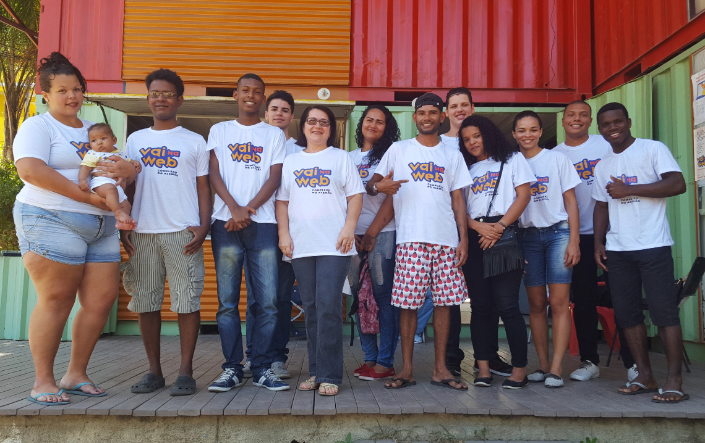

Programa Vai da Web democratiza o acesso à tecnologia, incentiva autonomia e fortalece a pluralidade de mão de obra do mercado de TI.
desafio
Ensinar linguagens de programação – combinadas às aulas de habilidades socioemocionais – para jovens de zonas de exclusão. Formar profissionais de excelência para enfrentar grandes desafios da era digital.
resultado
Jovens aptos a utilizar sofisticadas linguagens de programação; as mesmas usadas por startups de tecnologia do Vale do Silício nos EUA.
impacto
Formação de aproximadamente 200 alunos; dos quais 20% foram contratados por empresas e outros 25% ingressaram em faculdades.
cliente
—
Em atividade desde 2017, o programa Vai na Web – uma iniciativa do Instituto Precisa Ser e 1STi – transforma jovens de zona de exclusão, com potencial para desenvolver tecnologias, em profissionais qualificados em prol de um mercado mais plural e democrático.
Com metodologia própria, inovadora e open source, o Vai na Web oferece aulas de programação avançada e gratuitas para jovens de 16 a 29 anos, moradores de comunidades do Rio de Janeiro: no Complexo do Alemão, na ONG Educap (Espaço Democrático de União, Convivência, Aprendizagem e Prevenção), e no Morro dos Prazeres, no Grupo PROA (Núcleo Comunitário Prevenção Realizada com Organização e Amor).
Com duração de nove meses, o programa é dividido em três módulos de 120 horas e fornece bases de linguagens de programação sofisticada, as mesmas usadas por startups de tecnologia do Vale do Silício nos EUA:
– Páginas web responsivas (HTML5, CSS3, Git, introdução ao Python) – Interfaces interativas (Vue.js, Javascript e APIs) – Serviços digitais (Python, Flask, DevOps)
Contudo, o objetivo da iniciativa vai além da formação tecnológica dos alunos, uma vez que o propósito do programa é potencializar o desenvolvimento humano dos estudantes. Assim, o curso oferece também aulas de habilidades socioemocionais: como comunicação não violenta; liderança; postura profissional, respeito à diversidade e meditação.
Para testar os conhecimentos, ao final de cada módulo, os estudantes elaboram um projeto para uma ONG ou iniciativa social. Desta experiência nasceu o “Alemão para o Mundo”, um site de buscas com diversos serviços e opções de lazer existentes na comunidade do Complexo do Alemão.
Os alunos que atingem os melhores resultados são selecionados para o “Estúdio”, programa de educação continuada, no qual os estudantes executam projetos para o mercado e recebem uma bolsa de estudos.
Com apenas um ano, o Vai na Web vem contribuindo com o fortalecimento da autonomia de estudantes, democratização ao acesso à tecnologia e diversidade de mão de obra disponível no mercado. Os resultados são notáveis: aproximadamente 200 novos programadores formados e prontos para enfrentar grandes desafios da era digital; destes, 20% foram contratados por empresas e outros 25% ingressaram na faculdade.